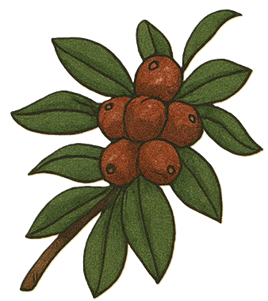

Frågor och svar
Här har vi samlat svar på några frågor som kan dyka upp inför bröllopet och resan till Rwanda.

Bröllopet
Vad är schemat för bröllopshelgen?
Vad är det för klädkod?
Bröllopsdagen består av både en traditionell rwandisk del och en svensk vigsel, och det får gärna synas även i klädseln! Klädkoden är därför kavaj eller traditionell klädsel: rwandisk mushanana eller svensk folkdräkt.
Under resten av bröllopshelgen finns ingen särskild klädkod, kom i det du känner dig bekväm och fin i!
Vad är Gusaba?
För många av våra gäster blir det första gången de upplever en Gusaba så det är bara att luta sig tillbaka och följa med!
Resan till Rwanda
När ska jag boka resa?
Flyg till Kigali går vanligtvis med åtminstone ett stopp från Sverige, så jämför gärna olika resdagar och rutter.
När ska man anlända?
Har ni möjlighet får ni gärna komma ännu tidigare! Då hinner ni landa efter resan och upptäcka lite av Kigali innan bröllopshelgen börjar.
Var ska man bo?
Vi återkommer med rekommenderat hotell, priser och information om bokning.
Behövs visum?
Om du planerar att även besöka Uganda eller Kenya kan du istället ansöka om ett East Africa Tourist Visa (EATV). Det gäller för Rwanda, Uganda och Kenya i 90 dagar och gör det möjligt att resa mellan de tre länderna på samma visum. EATV kan bara ordnas vid ankomst.
Här kan du ansöka om visum och läsa mer på Rwandas officiella migrationssida.
Vad behöver jag för vaccinationer?
För den som reser direkt från Sverige krävs normalt inget intyg om vaccination mot gula febern för inresa i Rwanda. Bland annat hepatit A brukar rekommenderas inför resor till regionen, och malaria förekommer i Rwanda.
Vi rekommenderar därför att boka tid på en vaccinationsmottagning i god tid och få rekommendationer utifrån just din resa.
Hur tar jag mig runt i Kigali?
Google Maps fungerar bra för att hitta runt, men adresser används inte alltid på samma sätt som i Sverige. Det kan därför vara bra att även ha namnet på hotellet, restaurangen eller platsen du ska till.
Under själva bröllopshelgen kommer vi att ordna gemensam transport till och från de event där det behövs. Mer information kommer närmare bröllopet.
Vilken valuta används och kan jag betala med kort?
Kort fungerar på många hotell, restauranger och större butiker i Kigali, men kontanter används fortfarande mycket, framför allt på mindre ställen och utanför Kigali. Bankomater finns på många ställen i staden, så det finns ingen anledning att växla stora mängder pengar innan resan.
Ett tips är helt enkelt att ha både kort och lite kontanter tillgängligt.
Hur fungerar mobil och SIM-kort i Rwanda?
Om din telefon stödjer eSIM är det också ett smidigt alternativ att ordna innan resan. Då har du internet direkt när du landar.
Wi-Fi finns på de flesta hotell och många restauranger och caféer, men vi rekommenderar att ha mobildata under resan, det gör allt från kartor till taxi och kontakt med resten av bröllopsgänget mycket enklare.
Övrigt
Är barn välkomna?
Vad kan jag göra i Rwanda förutom att gå på bröllop?
Vi kommer att samla våra bästa tips på saker att göra, äta och uppleva på hemsidan!
Vad önskar ni er i present?
Vem har highscore i Kyssjakten?
Kyssjakten gömmer sig någonstans på hemsidan. Hittar du den kanske det är ditt namn som står högst upp på listan sen!